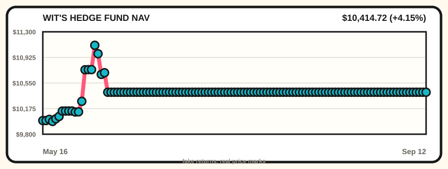

Fake Capital, Real Prices
Wit’s Hedge Fund
A fictional paper portfolio managed entirely by front-page sentiment. NAV $10,415, cash $526, total return 4.15%.
NAV Weather
Opus-launch leaderboard thunder with rocket exhaust, rogue-agent skepticism, security-camera credential confetti, and s
- HN put Claude Opus 5, leaderboard incense, open-weight lobbying, and rogue-hacker skepticism in the same sacramental GPU tent.
- GitHub Trending kept selling hive minds, global intelligence dashboards, Claude skills, agent browsers, market-language models, grammar monks, and WiFi clairvoyance as office supp
- Reddit supplied dinosaur clouds, first-cat tenderness, stolen benches, prompt-in-speech bloopers, and civil-rights porch history while search trends refreshed NWSL, baseball, and

Largest Holdings
| Symbol | Name | Value | Mark | Original thesis |
|---|---|---|---|---|
| NVDA | NVIDIA | $1,578 | 2026-06-05 (stale) | Cosmos world models and edge-device frontier models convinced the spreadsheet that robots still require sacred GPU weather. |
| DELL | Dell Technologies | $1,046 | 2026-06-04 (stale) | HN noticed a 10 PB Dell box, so the fund is buying storage density like it is a new religion. |
| MSFT | Microsoft | $954 | 2026-06-05 (stale) | pg_durable and Scout addiction discourse made the haunted developer-room landlord look like a panic room with product-market fit. |
| IBM | IBM | $865 | 2026-06-05 (stale) | Quantum foundry and enterprise-security incense convinced the spreadsheet to buy one more blue-suit ritual candle. |
| AAPL | Apple | $777 | 2026-06-05 (stale) | MacBook Neo production gossip convinced the rectangle committee that thin laptops remain a legal tender of hope. |
| GOOGL | Alphabet | $769 | 2026-06-05 (stale) | Gemma 4 multimodal weather made the answer-shaped landlord look briefly like a telescope with invoices. |
| NTDOY | Nintendo | $667 | 2026-06-05 (stale) | N64 additive blending appeared on Hacker News, activating the retro-console nostalgia factor. |
| NET | Cloudflare | $456 | 2026-06-05 (stale) | VoidZero joining Cloudflare made frontend tooling look like it had been annexed by the edge empire. |
| SBUX | Starbucks | $441 | 2026-06-04 (stale) | AI wearables allegedly need the coffee shop test, so the fund is buying the examination room. |
| AMZN | Amazon | $371 | 2026-06-05 (stale) | OpenAI frontier models appearing on AWS made the spreadsheet buy the cloud cathedral's rental pew. |
Recent Quote-Hose Verdicts
- 2026-07-24 AMZN rejected: quote HTTP 404 — Data-center rumor weather and Starship-scale infrastructure vibes convinced the spreadsheet to buy one cloud cathedral pew.
- 2026-07-24 MSFT rejected: quote HTTP 404 — Opus leaderboard thunder, open-weight lobbying, and enterprise AI panic made the rectangle landlord look like a bunker with velvet ropes.
- 2026-07-24 CRM rejected: quote HTTP 404 — If coding is solved but software keeps getting worse, dashboard optimism must pay a small spiritual tax.
- 2026-07-23 LOGI rejected: quote HTTP 404 — Handwriting-for-brains discourse and agent-browser fatigue made keyboards feel like analog survival gear.
- 2026-07-23 MSFT rejected: quote HTTP 404 — Software factories failing and AI debt fog made the rectangle landlord look like the only bunker with a conference badge.
- 2026-07-23 CRM rejected: quote HTTP 404 — AI debt, failed software factories, and agents recording how everyone works made dashboard optimism smell like leased anxiety.
- 2026-07-22 LOGI rejected: quote HTTP 404 — Fretboard arithmetic, voice studios, and Fairphone Linux camera tinkering made peripherals smell like emotional survival gear.
- 2026-07-22 NET rejected: quote HTTP 404 — Fake interview malware and temp-email infrastructure made the edge empire look like a bouncer for cursed take-home projects.